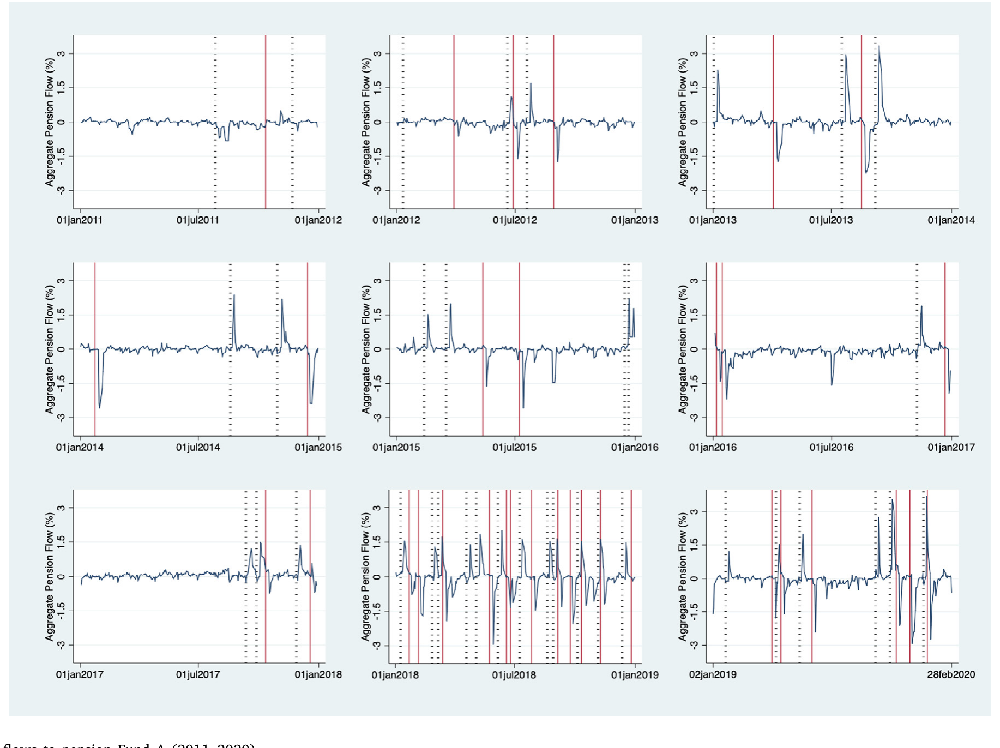
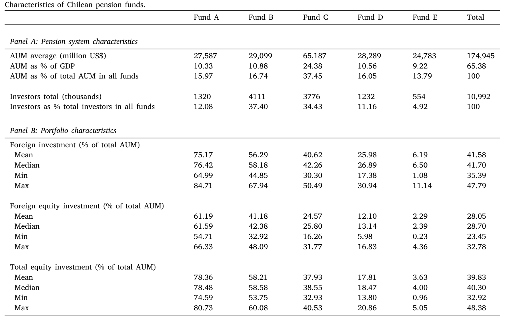
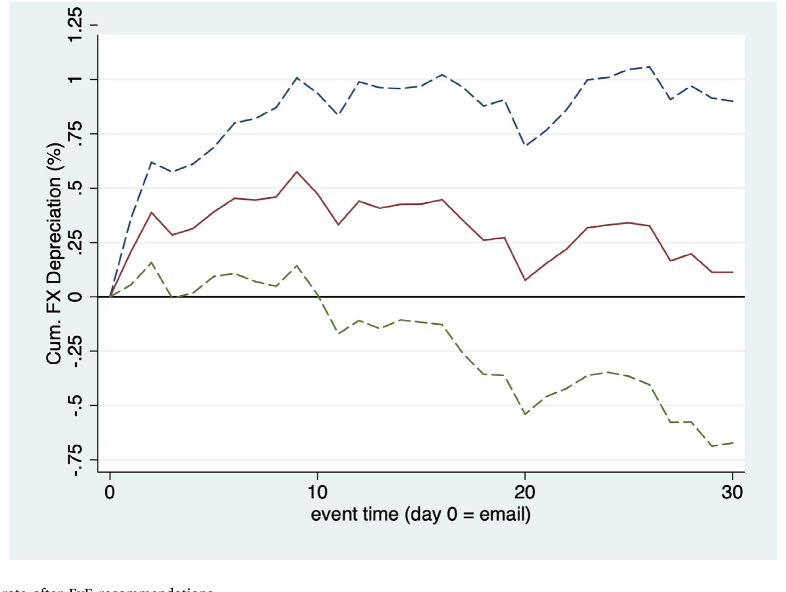
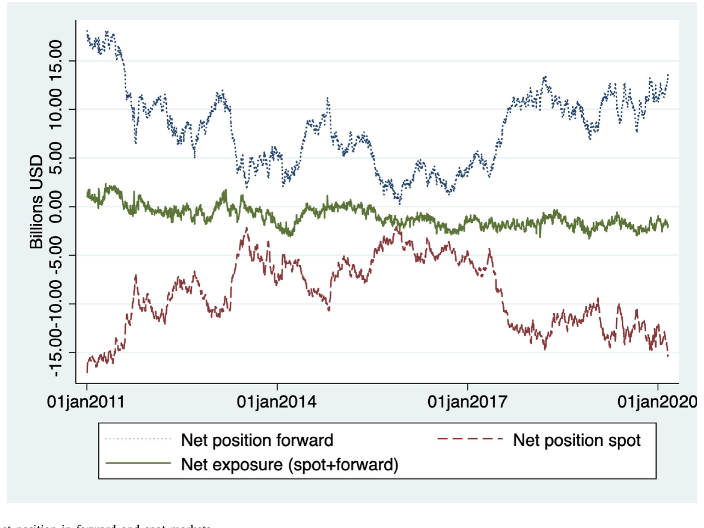
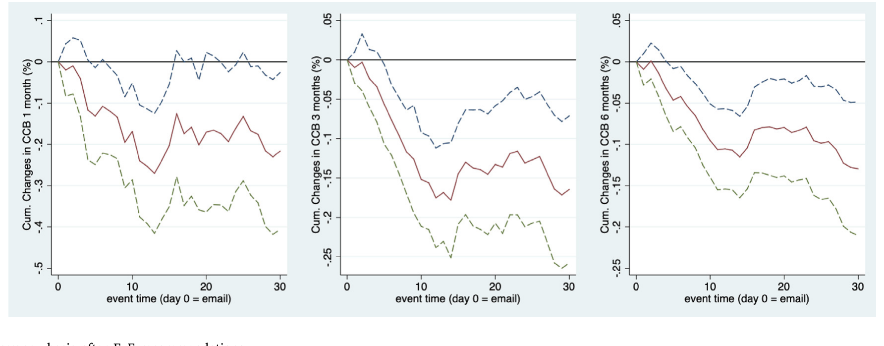
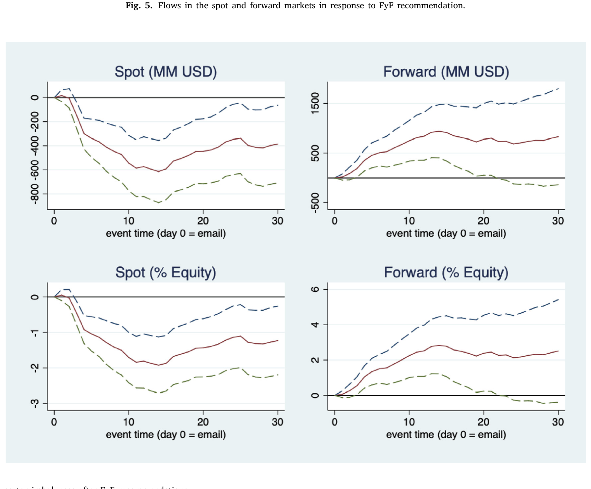
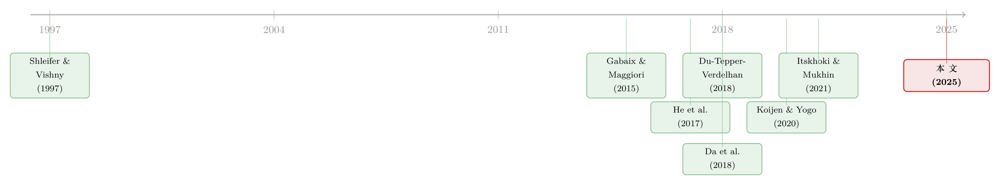

一封邮件，如何掀动一国的汇率与套利定价？
本文读的是 Aldunate, Da, Larrain & Sialm (2025, JFE)：智利一家理财公司频繁、却毫无信息含量的「择时建议」，触发了养老金在股、债基金之间的大额切换；由于股票基金高度配置海外资产，这种切换被迫在外汇市场上买卖巨量美元，把智利比索的即期汇率推动了 0.59%；本地银行为养老金提供流动性、再对冲到远期市场，于是即期的需求冲击传染到远期，最终在受到中介资产负债表约束的地方，撬出了抛补利率平价（CIP）的偏离——跨货币基差年化下移约 23 个基点。
1 引言：一封邮件，能值多少汇率？
先想象这样一个场景。智利有一家叫 Felices y Forrados（直译「幸福且满仓」，下称 FyF）的理财公司，它做的事情简单到近乎粗暴：每隔一段时间，给订阅者群发一封邮件，告诉他们「现在该全仓股票了」或者「赶紧躲进债券」。到 2020 年，它有 13 万付费订阅者（每月约 3 美元）、69 万 Facebook 粉丝。2011 到 2020 年间，它一共发出了 82 条这样的建议，平均每五到六周一次（2018 年起更密集到大约两周一次）。
听上去，这不过是又一家兜售「择时秘籍」的公司。问题在于——智利的养老金体系（AFP）允许参保人自由地在 A 到 E 五只资产配置各异的基金之间转移储蓄，从几乎全是全球股票的 A，到几乎全是比索固定收益的 E。于是 FyF 的一封邮件，就成了一根指挥棒：成千上万的散户同时申请把储蓄从 A 切到 E、或者从 E 切回 A。
这套体系有多大？2011–2020 年间整个养老金系统的资产管理规模（assets under management, AUM）约 1,750 亿美元，相当于智利 GDP 的 65%，覆盖了 20–65 岁人口的 84.5%。一封邮件，搅动的是一国 GDP 量级的资金池。

Figure 1: Daily flows to pension Fund A (2011–2020)
但真正让这篇论文有意思的，不是「流动很大」这件事本身，而是一个连锁反应：这些钱大部分要去海外。 接着，一个自然的问题就浮出来了——当一国的养老金被一封邮件赶着集体换仓，它会不会顺手把这个国家的汇率、乃至国际金融里最「神圣」的套利关系，也一起掀翻？
2 一个近乎完美的「噪声」实验
要回答上面的问题，最大的障碍是经济学家的老对手：内生性。汇率变动和资金流动总是纠缠在一起——是基本面先动、引发了资金流，还是资金流先动、推动了汇率？分不清因果，一切都是空谈。
FyF 的妙处，正在于它提供了一种罕见的「干净冲击」。论文用三句话论证了这一点（这也是全篇识别策略的基石）：
首先，这些建议几乎没有信息含量。 Da et al. (2018) 早就证明，FyF 的建议并不能持续跑赢简单的买入持有策略；本文在更长的样本上再次确认了这一点。FyF 全样本的夏普比率只有 1.005，反而低于更保守的 D、E 基金；2012 年之后的八年里，有六年它跑输了 A 基金。换句话说，跟着它折腾的人，平均而言并没占到便宜。
接着，这些建议在时点上几乎不可预测。 论文在表 2 里用一个回归来检验：被解释变量是「向 A 基金切换」的方向（从 +1 到 −1），解释变量是 A、E 基金的过去收益与波动、汇率、铜价，以及智美利差、远期贴水、两国通胀、智利 GDP 增速等一整套外汇市场的标准预测变量（参见 Rossi, 2013）。结果是：唯一显著的，是 A 基金的过去一周收益——FyF 在追逐短期动量；而所有外汇基本面变量都没有解释力，所有回归里最高的 R² 也只有 2%。
这一步非常关键：如果 FyF 的择时是被汇率基本面驱动的，那「建议 → 汇率」的相关就是伪因果。表 2 恰恰说明，外汇基本面预测不了它的建议——所以反过来，由建议引发的外汇交易，可以被当作与汇率基本面无关的需求冲击。
然后，这些冲击虽无信息，量级却惊人。 高频、方向多变、强度不一、又恰好来自一个清晰可辨的源头（一家理财公司的邮件）。这三点合起来，几乎就是教科书里「噪声交易者需求冲击」的理想形态。
那么，先把「流动」本身定义清楚。论文在日度层面，用每只基金 \(i\)（A–E）、每家 AFP \(k\)、每天 \(t\) 的份额净值 \(P_{ikt}\) 和资产规模 \(AUM_{ikt}\)，构造了如下的日度资金流：
直觉很清楚：把「资产规模长了多少」减去「价格涨了多少」，剩下的就是净流入/流出的真金白银。在非建议日，这个值平均接近于零；而在 FyF 建议之后，日度资金流可以高达 3%（例如 2019 年 11 月 11 日之后）。
一个常被忽视的制度细节，后面会反复用到：参保人当天（\(t\) 日）在线申请转换，AFP 须在 \(t+4\) 日完成资金的重新配置，但按 \(t+2\) 日的份额净值成交；并且当转换量超过基金 AUM 的 5% 时，超出部分要顺延到次日。这套「延迟执行」的规则，是后文解释「为什么 CIP 的价格效应会迟到」的钥匙。
3 第一跳：从基金切换，到外汇市场
为什么基金之间的切换会变成外汇交易？答案藏在资产配置里。
如表 1 所示，最激进的 A 基金把约 75%（均值 75.17%）的组合投在国际资产上，而最保守的 E 基金只有 6.19%；整个系统的海外资产占比均值约 41.58%。这正是债券组合里典型的「本币偏好」（home-currency bias，参见 Maggiori et al. 2020；Sialm & Zhu 2024）。

Table 1
于是逻辑链条清晰了：FyF 建议「从债券基金 E 切到股票基金 A」，意味着养老金要卖出比索资产、买入海外资产，进而要在外汇市场上买入美元；反向建议则相反。论文估计，一次典型的股债切换，需要在即期市场上交易接近 8.5 亿美元。
这笔钱砸下去，汇率动了。论文记录到：一次建议之后的五个交易日里，智利比索兑美元的汇率被推动了 0.59%。一封与汇率基本面毫无关系的邮件，硬生生在外汇市场上压出了近 0.6% 的价格效应。

Figure 2: The foreign exchange rate after FyF recommendations
到这里，故事已经足够有趣：它干净地估计了外汇市场「需求曲线的斜率」——非基本面的资金流，确实能推动汇率。（关于「用相对外生的需求冲击去丈量金融需求曲线斜率」这条思路，可参见《为什么「理性投资者」也会拒绝换股？——把需求弹性拆成两半》。）
但论文真正的雄心不在这里。一个自然的追问是：即期市场的这场波澜，会不会溢出到别的市场去？
4 真正关键的一步：银行如何把即期传染到远期
这就要请出故事的第二主角——本地银行。
先交代一个制度前提：在本文样本期内，智利比索是一种不可交割货币（non-deliverable currency，类似韩元、印度卢比、巴西雷亚尔）。这导致即期市场和远期市场之间存在天然的「分割」。养老金需要美元时，并不是自己去远期市场对冲，而是本地银行先出面提供流动性。
机制是这样的：当养老金要买美元，本地银行就去海外借入美元、卖给养老金（即期端）。但这样一来，银行自己就背上了一笔美元空头敞口。为了对冲，银行转身在远期市场上对外国人买入远期美元。论文给出的量级是：在一次「债→股」建议之后，本地银行买入的远期美元规模接近其股本的 2%。

Figure 3: Banks’ daily net position in forward and spot markets
看清楚这一步的含义了吗？银行因为要对冲自己在即期市场被动承接的敞口，就把养老金的需求冲击，从即期市场原封不动地搬运到了远期市场。银行成了夹在「国内养老金」与「国外对手方」之间的中介。
于是远期溢价（forward premium，即远期价与即期价之差）开始随银行「该买还是该卖」而变动。而远期溢价的波动，恰恰就是抛补利率平价偏离的来源。
这里值得停下来，把术语讲透。抛补利率平价（covered interest rate parity, CIP） 说的是：用远期合约锁定汇率后，借美元换比索去投资、与直接投资美元，回报应当相等——否则就有无风险套利。衡量这种偏离的指标叫跨货币基差（cross-currency basis, CCB）。CIP 成立时基差为零；基差越偏离零，套利空间越大。
本文的核心发现是：在一次「债→股」建议之后，跨货币基差年化下移了约 23 个基点。论文还细致地排除了「这是利差变动（比如违约风险变化）造成的」这一替代解释——远期价差的变化并没有被利差变动所补偿。也就是说，这是一次货真价实的 CIP 偏离，由一封邮件、经养老金、经银行对冲，一路传导而来。

Figure 7: Cross currency basis after FyF recommendations
还有一个反直觉的细节。即期和远期汇率几乎当天就对 FyF 的公告做出反应，但跨货币基差的价格效应却至少延迟三天才显现。为什么？回到第 2 节那个制度细节：养老金的转换是 \(t+2\) 才成交、\(t+4\) 才完成的。即期和远期市场会抢先「预期」交易，而基差的形成依赖于银行真正去执行对冲、占用资产负债表——这件事被制度性的执行延迟拖慢了。
5 反转：CIP 偏离为什么没被套利掉？
讲到这里，敏锐的读者一定会皱眉：等一下——本地银行不正是天然的套利者吗？既然基差偏了，它们为什么不冲进去做反向交易、把偏离抹平？
这正是全篇最深的一层反转，也是它与「单纯记录一次价格冲击」的研究拉开差距的地方。CIP 偏离之所以能存活，是因为存在套利的极限（limits to arbitrage，Shleifer & Vishny, 1997）。
本地银行本该是消除偏离的最佳人选，但针对资本和流动性的监管要求，让「与 CIP 违背做对手」这种重资产负债表的策略变得昂贵。论文用银行资产负债表数据，给出了两个干净的佐证：
其一，价格效应在季末更强。 Du et al. (2018) 指出，监管快照通常落在季末，银行在季末最不愿意扩张资产负债表。本文发现，FyF 建议在季末附近引发的即期与远期价格效应显著更大——这正是资产负债表成本在作祟。
其二，价格效应在银行资本约束刚收紧时更强。 当本地银行近期经历了资本约束的收紧，同样的需求冲击会撬出更大的价格反应。这与中介在其他市场中的角色一脉相承（He et al. 2017；Du et al. 2023）。

Figure 6: Banking sector imbalances after FyF recommendations
这一层论证的分量在于：它把「需求冲击 → 价格偏离」这条因果链，补上了供给侧的最后一环。偏离不是因为没人看见，而是因为看见的人被资产负债表的绳索绑住了手脚。（关于「做市商/中介被风险限额与资产负债表约束绑住」的逻辑，本博客此前评述过两篇很贴近的文章：《无风险市场里的风险厌恶：是谁给做市商系上了「风险限额」这根绳》 与 《banks-as-regulated-traders》。）
6 文献脉络
把这篇论文放回它生长的土壤里，会看得更清楚。
这条线最古老的根，是 Shleifer & Vishny (1997) 的「套利的极限」——它告诉我们，价格偏离能持续，往往不是因为没有套利者，而是因为套利者有约束。沿着汇率这一支，Gabaix & Maggiori (2015) 把「不完美金融市场 + 风险厌恶的中介」写进了汇率决定的核心，让「资本流动能推动汇率」从经验观察上升为理论机制。

进入 2010 年代后期，He et al. (2017) 用众多资产类别的证据，把「中介资产负债表健康度」确立为一个被定价的风险因子；而 Du, Tepper & Verdelhan (2018) 则把镜头对准了 CIP——这个曾被视为「金融第一定律」的无风险套利关系，竟在金融危机后系统性地破裂，他们指出这与银行资产负债表成本密切相关。Du & Schreger (2022) 进一步综述了这条文献，并明确指出：大型非银投资者在 CIP 研究里一直被忽视。
与此同时，「需求驱动的资产定价」蔚然成风：Koijen & Yogo (2020) 的需求体系方法、Gabaix & Koijen (2021) 的「非弹性市场假说」，都在强调资金流——哪怕是非基本面的资金流——会推动价格。Itskhoki & Mukhin (2021) 则把噪声交易者、风险厌恶的中介与套利极限，一并搬进了货币市场的舞台。
而最直接的前传，是同一批作者的 Da et al. (2018)——他们最早记录了 FyF 建议对智利股债市场的「破坏性」影响。本文站在这块基石上，往前走了关键一步：把目光从国内市场，移到了外汇与 CIP；并第一次用银行资产负债表数据，在日度频率上量化了银行的对冲需求与 CIP 偏离的因果联系。 它恰好填上了 Du & Schreger (2022) 所点名的那块空白：一个清晰可辨的大型非银投资者的需求冲击，如何经由银行中介，演变成套利关系的偏离。
评论与延伸（Q&A + 研究方向）
(a) 几个可能的疑问
Q：FyF 的建议「不可预测、无信息」，凭什么就能当成外生冲击？
严格说它不是随机分配的——表 2 显示，A 基金过去一周的收益能显著预测它的建议（一种短期动量）。但识别要的不是「随机」，而是「与被解释变量的基本面无关」。表 2 里所有外汇基本面变量都不显著、R² 不超过
2%，意味着汇率的基本面预测不了 FyF 的择时；因此由建议触发的外汇交易，可以合理地视为与汇率基本面正交的需求冲击。
Q：0.59% 的汇率效应和 23bp 的基差变动，会不会只是反映了利差或违约风险的变化？
论文专门处理了这个替代解释。它确认远期价差的变化没有被利差变动（例如时变违约风险派生的部分）所补偿——这正是把「真实的 CIP 偏离」与「利差驱动的远期变动」区分开的关键检验。
Q：跨货币基差的效应为什么要延迟至少三天才出现，这不奇怪吗？
不奇怪，反而是机制自洽的证据。养老金转换在 \(t+2\) 才按净值成交、\(t+4\) 才完成；即期与远期会抢先反应，而基差依赖银行真正执行对冲、占用资产负债表，被制度性的执行延迟拖慢。延迟本身就指向「这是经由银行中介传导的」。
Q：这和把基差直接归因于「美元荒」「在岸美元短缺」有何不同？
多数 CIP 文献从供给侧（银行监管约束导致美元供给受限）切入。本文的增量在需求侧：它精确指认了一个非银的、可观测来源的需求冲击（FyF→养老金），并展示需求冲击如何与供给约束相互作用才产生偏离——季末、资本约束刚收紧时效应更强，正是供需交汇的印证。
Q：为什么是银行、而不是养老金自己去远期市场对冲？
因为智利比索在样本期是不可交割货币，即期与远期市场被制度性地分割。养老金的需求落在即期，本地银行被动承接、形成美元敞口，再去远期对外国人对冲。银行因此天然地成为夹在国内养老金与国外对手方之间的中介，需求冲击也就被它「搬运」到了远期。
Q：FyF 在 2021 年被监管挤出市场，这对结论有影响吗？
论文刻意只用到 2020 年 2 月之前的样本。2020 年起 FyF 与监管的对峙升级，且智利在 2020–2021 年批准了三次大规模养老金提取（合计逾
500亿美元、约占系统 AUM 的 30%），实验的性质被根本改变。把这段排除掉，反而让前述识别更干净。
(b) 几个可能的研究问题与提案
1. 把这套机制搬到公司债/信用市场的外资持有人身上。 【经济故事】美国公司债里外资持有比例可观，且其对冲需求高度集中在季末。如果某类外资（如受本币偏好约束的养老金/保险）的再平衡构成可观测的需求冲击，它是否会经由交易商的对冲，传导到 CDS-bond 基差或公司债的跨货币定价？这等于把本文从主权/汇率层面推进到信用层面。 【可行性】中。难点在于找到 FyF 这样「外生且可观测」的外资需求冲击；可考虑指数纳入/再平衡（参见 Broner et al. 2021 的思路）或评级触发的被动交易作为工具。数据上需要 TRACE + 交易商持仓 + 跨货币基差，门槛不低但并非不可得。
2. 用本文的银行资产负债表数据，检验 CIP 偏离对实体信贷的反馈。 【经济故事】Keller (2024) 已提示银行会按 CIP 套利活动调整放贷货币。一个自然延伸是：当养老金冲击撬动基差、占用银行资产负债表时，本地企业的（外币）信贷供给会不会被挤出？这把「套利极限」从定价问题升级为实体后果问题。 【可行性】中到高。智利有较完整的银行—企业信贷登记数据，可做 \(t+几日\) 的银行层面冲击 → 企业层面信贷的传导，识别上能借用 FyF 冲击的外生性。
3. 散户「羊群」式择时的福利成本核算。 【经济故事】跟随 FyF 的散户平均没占到便宜，却制造了汇率与基差的外部性（更高的对冲成本最终可能转嫁给整个金融体系）。这是一个典型的「私人无收益、社会有成本」的噪声交易案例，值得量化其总福利损失。 【可行性】高。本文已有个体转账数据与价格效应估计，构造一个简单的「散户净损失 + 中介成本」的会计框架是 doable 的。
4. 不可交割货币这一制度特征的跨国比较。 【经济故事】本文的传导高度依赖「即期—远期分割」。韩元、印度卢比、巴西雷亚尔同样是（或曾是）不可交割货币。同样的需求冲击，在可交割与不可交割货币国之间，传导到 CIP 的强度是否系统性不同？这能把「市场分割」作为一个可检验的调节变量隔离出来。 【可行性】中。需要多国的养老金/基金流动与远期市场数据，冲击的可比性是主要挑战；可优先在有类似「集中择时建议」现象的市场寻找准实验。
我的判断
这篇论文最漂亮的地方，是它把一条完整的因果链从头到尾打通并量化了：一封无信息的邮件 → 散户羊群式换仓 → 即期外汇的大额交易（0.59% 汇率效应）→ 银行被动承接并对冲 → 远期市场的传染 → CIP 偏离（年化 23bp）→ 受中介资产负债表约束而无法被套平（季末更强、资本约束收紧时更强）。能用银行资产负债表数据在日度频率上钉死「银行对冲需求」这一环，是它相对于既有 CIP 文献的真正增量；它也正面回应了 Du & Schreger (2022) 对「大型非银投资者被忽视」的关切。
要说对识别的担忧，主要有三点。其一，FyF 的建议虽与汇率基本面正交，却并非与一切正交——它追逐 A 基金的短期动量，而股票动量与汇率、风险偏好之间未必完全无关，残余的内生性值得更细的安慰性检验。其二，几乎所有量级都来自智利这一个国家、一家理财公司、十年样本，外部有效性如何，需要上面第 4 个研究方向那样的跨国验证来支撑。其三，银行「股本 2%」「年化 23bp」这类估计依赖于把银行远期头寸的变动干净地归因于养老金对冲，而银行同期还有其他客户与自营交易，归因的精度取决于数据切割的细致程度。
后续我最想看到的，是把这套「需求冲击 × 中介约束」的显微镜，对准公司债与信用市场的外资持有人：当外资的本币偏好与季末资产负债表约束相遇，它会在 CDS-bond 基差、跨货币信用定价上留下怎样的指纹？那将是这条研究脉络最自然、也最有政策意义的下一站。
参考文献
- Da, Z., Larrain, B., Sialm, C., & Tessada, J. (2018). Destabilizing financial advice: Evidence from pension fund reallocations. Review of Financial Studies 31(10), 3720–3755.
- Du, W., Tepper, A., & Verdelhan, A. (2018). Deviations from covered interest rate parity. Journal of Finance 73(3), 915–957.
- Du, W., & Schreger, J. (2022). CIP deviations, the dollar, and frictions in international capital markets. Handbook of International Economics 6, 147–197.
- Du, W., Hébert, B.M., & Huber, A.W. (2023). Are intermediary constraints priced? Review of Financial Studies 36(4), 1464–1507.
- Gabaix, X., & Maggiori, M. (2015). International liquidity and exchange rate dynamics. Quarterly Journal of Economics 130(3), 1369–1420.
- Gabaix, X., & Koijen, R.S. (2021). In search of the origins of financial fluctuations: The inelastic markets hypothesis. Working Paper.
- He, Z., Kelly, B., & Manela, A. (2017). Intermediary asset pricing: New evidence from many asset classes. Journal of Financial Economics 126(1), 1–35.
- Maggiori, M. (2022). International macroeconomics with imperfect financial markets. Handbook of International Economics 6, 199–236.
- Shleifer, A., & Vishny, R.W. (1997). The limits of arbitrage. Journal of Finance 52(1), 35–55.